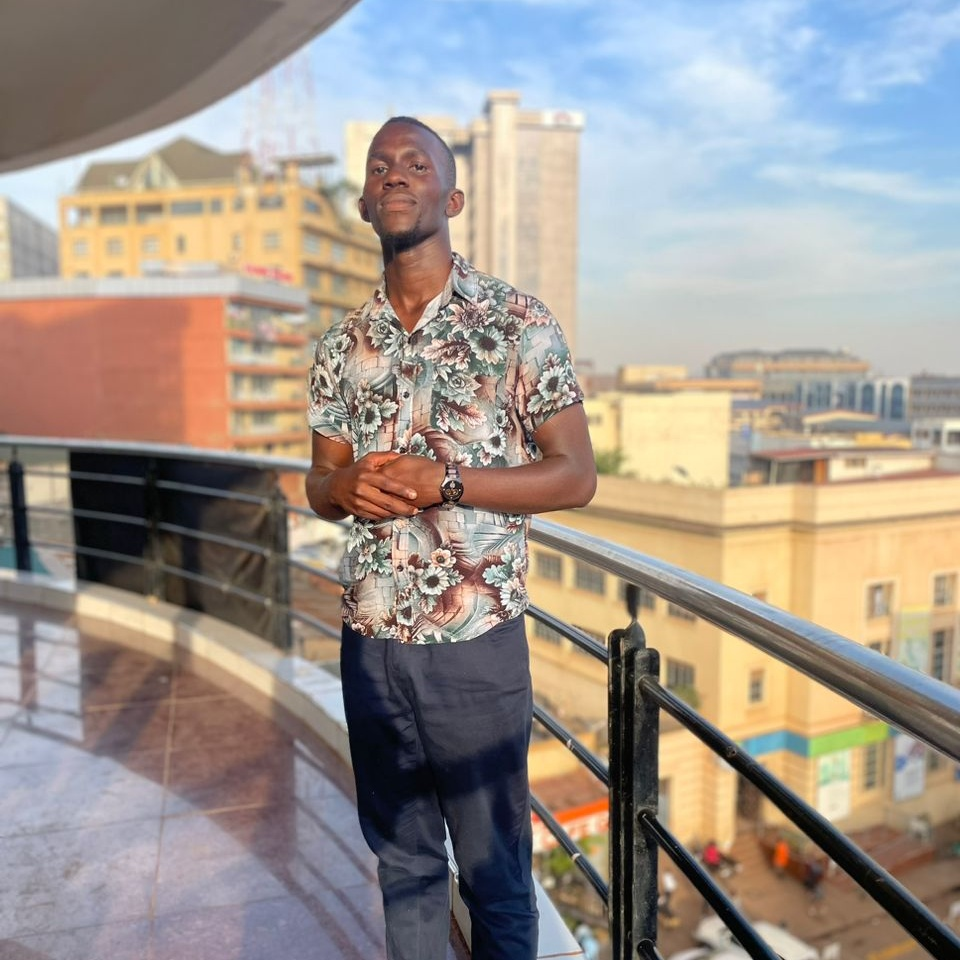

CURRICULUM VITAE

CONTACT INFORMATION
- Full name: Mpungu Peter Clever
- Address: Bulenga Kasasa
- Phone number: +256 761088409
- Email: peterclever130@gmail.com
- LinkedIn
+256 761088409
peter clever
clever_montage
PROFESSION
Dedicated IT student persuing a strong foundation in programming, database management and networking fundamentals.
Currently pursuing
a Bachelor's degree in Information Technology ready to apply skills and knowledge in a dynamic IT sphere.
EDUCATION
- Institute: Uganda Martyrs University
- Location: Lubaga
- Award: Undergraduate
- Courseworks: Computer architecture, Computational mathematics,
Web development, Computer programming, Fundamentals of IT & networking.
- Expected year of graduation: 2026
- Institute: Kakungulu High School
- Location: Bombo
- Award: UACE
- Year: 2022-2023
- Institute: St.Peter's SSS Nsambya
- Location: Nsambya
- Award: UCE
- Year: 2016-2020
WORK EXPERIENCE
- Part-Time IT Support,University Help Desk
20th Aug.to date (Part-Time,10 hours/week)
- Providing technical assistance to students, faculty,and staff via phone, email and in person.
- Collaborated with team members to improve help desk processes
- Installed and configured software applications.
Key skills developed
- Technical support.
- Troubleshooting help desk software.
- Communication.
SKILLS AND PROFICIENCY
- Skill: Programming skills ie using C, C++, Python and Java
Proficiency: Beginner
- Skill: Web development skills ie html/css & React
Proficiency: Beginner
- Skill: Data base skills ie MySQL & Oracle:
Proficiency: Beginner
- Skill: Communication skills
Proficiency: Advanced
ACHIEVEMENTS
Project-based Achievements
- Developed a web application using html
- Completed coursework of all course units
- Coded a program using C, C++, Java & Python
leadership Achievements
- Team Lead, Web Development Class
Led a team of 5 members to develop a web application using html.(an application showing real madrid players bio data)
- Team Lead, Computer Programming Class
led a team of 5 members to code a program using c++ (a program with all the basics of programming)
- Project Manager, Group5 (2024)
cordinated a team of 4 members to develop a web application.
Quantifiable Achievements
- Improved team morale bz 20% by regular feedback.
- Reduced project timeline by 30% through efficient task delegation.
- Increased team membership by 50% by effective recruitment strategy.
VOLUNTEER EXTRACURRICULLAR ACTIVITIES
- Uganda Martyrs University Lubaga Year1 Team,Team Captain(2024)
Led team to victory by truimphing over the continuing year students twice
- Uganda Martyrs University Lubaga Year1 Fiesta,King Fresher(2024)
Managed to be a male representative of the year 1 males at the event
REFERENCE
- Name:Mirembe Eva
Lecturer,Web Development
Uganda Matyrs University
Phone:+256 703630016
Email:neva@umu.ac.ug
- Name:Sserubiri Byron
Lecturer, Computer Programming
Uganda Matyrs University
Phone:+256 702874460
Email:bserubiri@umu.ac.ug